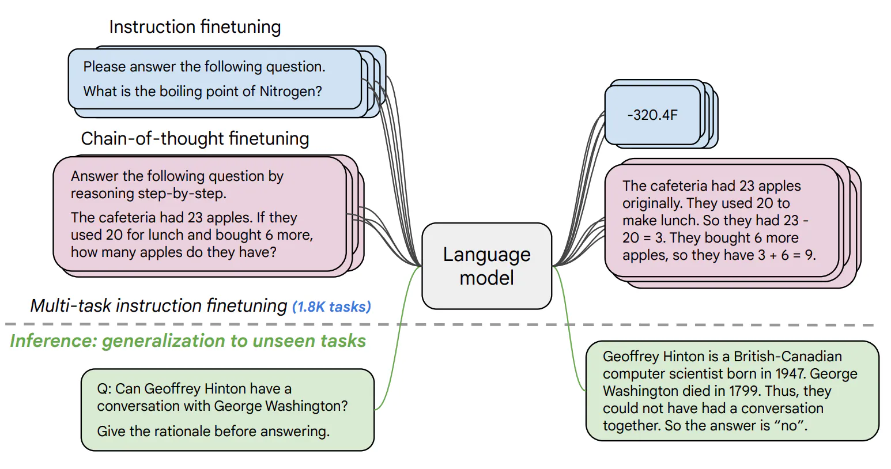

Instruction Tuning of Language Models#
NLP and ML have gone through several phases of how models are trained in recent years. With the arrival of pre-trained models such as BERT, fine-tuning pre-trained models for downstream tasks became the norm. The increasing capabilities of ever larger models then enabled in-context learning via prompting. Recently, instruction tuning has become the newest method to make LLMs useful in practice.
What is Instruction Tuning?#
The main difference between instruction tuning and standard supervised fine-tuning lies in the data that the model is trained on. Whereas supervised fine-tuning trains models on input examples and their corresponding outputs, instruction tuning augments input-output examples with instructions, which enables instruction-tuned models to generalize more easily to new tasks.

For a list of history of Instruction Tuning, and several datasets, you can refer to https://newsletter.ruder.io/p/instruction-tuning-vol-1
Available Instruction-tuned Models#
Open-source models in the HuggingFace, such as Flan-T5 by Google: https://huggingface.co/google/flan-t5-large
API-based models, such as gpt-3.5-turbo and gpt-4 (the ones behind ChatGPT) from OpenAI: https://openai.com/product
In this session, we will start with the OpenAI API!
Using the GPT models through the API#
In this notebook, we will use the GPT models through the API. We will use the openai library to interact with the API.
This can be used for building different applications and services.
For reference, see https://platform.openai.com/docs/api-reference/introduction
This code uses my account for authentication. If you develop code, you should sign up for your own account at https://platform.openai.com/ then you can use a credit card and set limits (ie x euro or dollars per month maximum) when you do this, you will get an API key.
#!pip install openai
# We will create a client object using the OpenAI api to make requests
# For this we need to use the keys so that is is authenticated and charges can be made
# This is the more recent API - for 'OpenAI', not 'openai'
from openai import OpenAI
client = OpenAI(api_key = "sk-...")
We can access the GPT-models from code and get an answer to any question.#
This can be:
a question from a customer (like an agent)
a question for your own work
a service that is needed for your code… or more.
response = client.chat.completions.create(
model="gpt-3.5-turbo",
messages=[
{"role": "system", "content": "You are a helpful assistant."},
{"role": "user", "content": "Who won the Soccer World Cup in 2010? "}
]
)
print(response.choices[0].message.content)
The 2010 FIFA World Cup was won by Spain. They defeated the Netherlands 1-0 in the final held in South Africa.
response = client.chat.completions.create(
model="gpt-3.5-turbo",
messages=[
#{"role": "system", "content": "You are a helpful assistant."},
{"role": "user", "content": "Who won the Soccer World Cup in 2010? "},
{"role": "assistant", "content": response.choices[0].message.content},
{"role": "user", "content": "Who scored the goals?"}
]
)
print(response.choices[0].message.content)
In the final of the 2010 FIFA World Cup, the only goal was scored by Andrés Iniesta of Spain.
We can inspect the response object, and see, how many tokens were used:
print(response)
ChatCompletion(id='chatcmpl-99XLsa6oJkTxGxwawBRbDB0fNmpqQ', choices=[Choice(finish_reason='stop', index=0, logprobs=None, message=ChatCompletionMessage(content='In the final of the 2010 FIFA World Cup, the only goal was scored by Andrés Iniesta of Spain.', role='assistant', function_call=None, tool_calls=None))], created=1712060184, model='gpt-3.5-turbo-0125', object='chat.completion', system_fingerprint='fp_b28b39ffa8', usage=CompletionUsage(completion_tokens=25, prompt_tokens=59, total_tokens=84))
59*0.5*1e-6 + 25*1.5*1e-6
6.7e-05
question = "What are the most common cars? I want a short list of 5 with around 10 words per item"
response = client.chat.completions.create(
model="gpt-3.5-turbo",
messages=[
{"role": "user", "content": question}
]
)
print(response.choices[0].message.content)
1. Toyota Corolla - Affordable, reliable, fuel-efficient compact sedan with comfortable interior.
2. Ford F-150 - Best-selling pickup truck known for its durability and capabilities.
3. Honda Civic - Popular compact car offering good performance and fuel efficiency.
4. Chevrolet Silverado - Versatile and rugged full-size pickup truck with strong towing capacity.
5. Jeep Wrangler - Iconic off-road SUV with rugged design and impressive capabilities.
Let’s use the GPT-4 model:
question = "What are the most common cars? I want a short list of 5 with 10 words per item"
response = client.chat.completions.create(
model="gpt-4",
messages=[
{"role": "user", "content": question}
]
)
print(response.choices[0].message.content)
1. Toyota Corolla: Affordable, reliable, fuel-efficient, compact sedan, produced by Japanese manufacturer.
2. Ford F-150: American-made, full-size pick-up truck known for hauling capacity.
3. Honda Civic: Respected for long-term reliability, superior gas-mileage, and sporty design.
4. Chevrolet Silverado: Tough, heavy-duty pickup, appreciated for towing ability and durability.
5. Volkswagen Golf: German-engineered hatchback, renowned for comfort, handling and fuel efficiency.
Notice how it took much longer…
# Lets get an answer?
q = input('What do you want to know: ')
answer = client.chat.completions.create(
model="gpt-3.5-turbo",
messages=[
{"role": "user", "content": q}
]
)
print(answer.choices[0].message.content)
The capital of France is Paris.
Classification tasks with GPT#
We can just appropiately prompt the model:
# Sentiment analysis:
statement = "This carpet is never clean"
q = "What is the sentiment of " + statement + ". Answer in one lower case word (positive, negative, neutral).\nSentiment:"
answer = client.chat.completions.create(
model="gpt-3.5-turbo",
messages=[
{"role": "user", "content": q}
]
)
print(answer.choices[0].message.content)
negative
# Sentiment analysis:
statement = "Coppola invents a new look for cinema and broadens the horizons of an industry that was crying out for new lifeblood."
q = "What is the sentiment of " + statement + ". Anser in one lower case word (positive, negative, neutral).\nSentiment:"
answer = client.chat.completions.create(
model="gpt-3.5-turbo",
messages=[
{"role": "user", "content": q}
]
)
print(answer.choices[0].message.content)
positive
Translation tasks#
# easy to translate languages
statement = "You look great"
q = "how do you say this in Spanish:" + statement
answer = client.chat.completions.create(
model="gpt-3.5-turbo",
messages=[
{"role": "user", "content": q}
]
)
print(answer.choices[0].message.content)
Te ves genial.
q = "write a tagline for a Ferrari with 15 words or less. Use the word Ferrari"
answer = client.chat.completions.create(
model="gpt-3.5-turbo",
messages=[
{"role": "user", "content": q}
]
)
tagline = answer.choices[0].message.content
print(tagline)
Unleash your passion for speed with the iconic Ferrari - where power meets luxury.
Prompt Engineering#
def get_response(prompt, temperature=0, model="gpt-3.5-turbo", max_tokens = 256):
# Create a request to the chat completions endpoint
response = client.chat.completions.create(
model = model,
temperature = temperature,
max_tokens = max_tokens,
# Assign the role and content for the message
messages=[{"role": "user", "content": prompt}],
#seed = 123
)
return response.choices[0].message.content
Temperature parameter effect#
The temperature parameter is a hyperparameter that controls the randomness of the output. Higher temperatures make the model more creative, but also more unpredictable.
prompt = "The sky is"
print(get_response(prompt))
blue and dotted with fluffy white clouds.
prompt = "The sky is"
print(get_response(prompt, temperature=1.5))
an ever-changing canvas of colors and clouds, showcasing the beauty and wonder of the world above us. Whether it's a clear blue day or painted with vibrant hues during a sunset, the sky is always a captivating sight to behold. Its endless expanse stretches far and wide, reminding us of the vastness of the universe and our place within it. The sky is a symphony in motion, with clouds dancing and drifting in the wind, creating a magical scene for us to gaze upon. With each passing moment, the sky gives us a new perspective, inspiring us to look up and appreciate the wonders of nature that surround us.
Text Summarization#
prompt = """Antibiotics are a type of medication used to treat bacterial infections. They work by either killing the bacteria or preventing them from reproducing, allowing the body's immune system to fight off the infection. Antibiotics are usually taken orally in the form of pills, capsules, or liquid solutions, or sometimes administered intravenously. They are not effective against viral infections, and using them inappropriately can lead to antibiotic resistance.
Explain the above in one sentence:"""
print(get_response(prompt))
Antibiotics are medications used to treat bacterial infections by either killing the bacteria or preventing their reproduction, but they are not effective against viral infections and misuse can lead to antibiotic resistance.
Exercise: Instruct the model to explain the paragraph in one sentence like “I am 5”. Do you see any differences?
prompt = """Antibiotics are a type of medication used to treat bacterial infections. They work by either killing the bacteria or preventing them from reproducing, allowing the body's immune system to fight off the infection. Antibiotics are usually taken orally in the form of pills, capsules, or liquid solutions, or sometimes administered intravenously. They are not effective against viral infections, and using them inappropriately can lead to antibiotic resistance.
Explain the above in one sentence as if I were a 5 year old child:"""
print(get_response(prompt))
Antibiotics are special medicines that help your body fight off bad germs that make you sick.
We can create a workflow to summarize several reviews:
# review for a toy
review_1 = """Got this panda plush toy for my daughter's birthday, \
who loves it and takes it everywhere. It's soft and \
super cute, and its face has a friendly look. It's \
a bit small for what I paid though. I think there \
might be other options that are bigger for the \
same price. It arrived a day earlier than expected, \
so I got to play with it myself before I gave it \
to her.
"""
# review for a standing lamp
review_2 = """Needed a nice lamp for my bedroom, and this one \
had additional storage and not too high of a price \
point. Got it fast - arrived in 2 days. The string \
to the lamp broke during the transit and the company \
happily sent over a new one. Came within a few days \
as well. It was easy to put together. Then I had a \
missing part, so I contacted their support and they \
very quickly got me the missing piece! Seems to me \
to be a great company that cares about their customers \
and products.
"""
# review for an electric toothbrush
review_3 = """My dental hygienist recommended an electric toothbrush, \
which is why I got this. The battery life seems to be \
pretty impressive so far. After initial charging and \
leaving the charger plugged in for the first week to \
condition the battery, I've unplugged the charger and \
been using it for twice daily brushing for the last \
3 weeks all on the same charge. But the toothbrush head \
is too small. I’ve seen baby toothbrushes bigger than \
this one. I wish the head was bigger with different \
length bristles to get between teeth better because \
this one doesn’t. Overall if you can get this one \
around the $50 mark, it's a good deal. The manufactuer's \
replacements heads are pretty expensive, but you can \
get generic ones that're more reasonably priced. This \
toothbrush makes me feel like I've been to the dentist \
every day. My teeth feel sparkly clean!
"""
# review for a blender
review_4 = """So, they still had the 17 piece system on seasonal \
sale for around $49 in the month of November, about \
half off, but for some reason (call it price gouging) \
around the second week of December the prices all went \
up to about anywhere from between $70-$89 for the same \
system. And the 11 piece system went up around $10 or \
so in price also from the earlier sale price of $29. \
So it looks okay, but if you look at the base, the part \
where the blade locks into place doesn’t look as good \
as in previous editions from a few years ago, but I \
plan to be very gentle with it (example, I crush \
very hard items like beans, ice, rice, etc. in the \
blender first then pulverize them in the serving size \
I want in the blender then switch to the whipping \
blade for a finer flour, and use the cross cutting blade \
first when making smoothies, then use the flat blade \
if I need them finer/less pulpy). Special tip when making \
smoothies, finely cut and freeze the fruits and \
vegetables (if using spinach-lightly stew soften the \
spinach then freeze until ready for use-and if making \
sorbet, use a small to medium sized food processor) \
that you plan to use that way you can avoid adding so \
much ice if at all-when making your smoothie. \
After about a year, the motor was making a funny noise. \
I called customer service but the warranty expired \
already, so I had to buy another one. FYI: The overall \
quality has gone done in these types of products, so \
they are kind of counting on brand recognition and \
consumer loyalty to maintain sales. Got it in about \
two days.
"""
reviews = [review_1, review_2, review_3, review_4]
for i in range(len(reviews)):
prompt = f'''
Your task is to generate a short summary of a product \
review from an ecommerce site.
Summarize the review below, delimited by triple \
backticks in at most 20 words.
Review: ```{reviews[i]}```
'''
response = get_response(prompt)
print(i, response, "\n")
0 Summary: Cute panda plush toy loved by daughter, soft and friendly, but smaller than expected for the price. Arrived early.
1 Summary: Lamp with storage, affordable, fast delivery. Company provided excellent customer service, quick replacements for broken and missing parts.
2 Impressive battery life, small head, good deal for $50, generic replacement heads available, leaves teeth feeling clean.
3 Summary: Price fluctuations, slight design flaw, motor noise after a year, but efficient for various food prep tasks.
Exercise Use “extract the information relevant to shipping and delivery” instead of summarize
for i in range(len(reviews)):
prompt = f'''
Your task is to generate a short summary of a product \
review from an ecommerce site.
Extract the information relevant to shipping and delivery, delimited by triple \
backticks in at most 20 words.
Review: ```{reviews[i]}```
'''
response = get_response(prompt)
print(i, response, "\n")
0 Shipping and delivery: Arrived a day earlier than expected, allowing for personal enjoyment before gifting.
1 Shipping and delivery: Lamp arrived in 2 days, replacement string and missing part sent quickly. Great customer service.
2 Shipping and delivery: Not mentioned.
3 Shipping and delivery: Got it in about two days.
### Question Answering
prompt = """Answer the question based on the context below. Keep the answer short and concise. Respond "Unsure about answer" if not sure about the answer.
Context: Teplizumab traces its roots to a New Jersey drug company called Ortho Pharmaceutical. There, scientists generated an early version of the antibody, dubbed OKT3. Originally sourced from mice, the molecule was able to bind to the surface of T cells and limit their cell-killing potential. In 1986, it was approved to help prevent organ rejection after kidney transplants, making it the first therapeutic antibody allowed for human use.
Question: What was OKT3 originally sourced from?
Answer:"""
print(get_response(prompt))
Mice
Compare with just asking the question without context:
prompt = """What was OKT3 originally sourced from?"""
print(get_response(prompt))
OKT3 was originally sourced from mouse hybridoma cells.
user_messages = [
"La performance du système est plus lente que d'habitude.", # System performance is slower than normal
"Mi monitor tiene píxeles que no se iluminan.", # My monitor has pixels that are not lighting
"Il mio mouse non funziona", # My mouse is not working
"Mój klawisz Ctrl jest zepsuty", # My keyboard has a broken control key
"我的屏幕在闪烁" # My screen is flashing
]
for issue in user_messages:
prompt = f"Tell me what language this is: ```{issue}```"
lang = get_response(prompt)
print(f"Original message ({lang}): {issue}")
prompt = f"""
Translate the following text to English \
and Korean: ```{issue}```
"""
response = get_response(prompt)
print(response, "\n")
Original message (This is French.): La performance du système est plus lente que d'habitude.
English: "The system performance is slower than usual."
Korean: "시스템 성능이 평소보다 느립니다."
Original message (This is Spanish.): Mi monitor tiene píxeles que no se iluminan.
English: "My monitor has pixels that do not light up."
Korean: "내 모니터에는 빛나지 않는 픽셀이 있습니다."
Original message (Italian): Il mio mouse non funziona
English: My mouse is not working
Korean: 내 마우스가 작동하지 않습니다
Original message (This is Polish.): Mój klawisz Ctrl jest zepsuty
English: My Ctrl key is broken
Korean: 제 Ctrl 키가 고장 났어요
Original message (This is Chinese.): 我的屏幕在闪烁
English: My screen is flickering
Korean: 내 화면이 깜박거립니다
Role-Playing#
prompt = """The following is a conversation with an AI research assistant. The assistant tone is technical and scientific.
Human: Hello, who are you?
AI: Greeting! I am an AI research assistant. How can I help you today?
Human: Can you tell me about the creation of blackholes?
AI:"""
print(get_response(prompt))
Black holes are formed when a massive star collapses under its own gravity after running out of nuclear fuel. This collapse causes the star's core to shrink to a point of infinite density, known as a singularity. The gravitational pull of this singularity is so strong that not even light can escape, creating a region of spacetime from which nothing can escape, known as the event horizon. This is what we observe as a black hole.
prompt = """The following is a conversation with a Blackbeard, the most famous pirate ever.
Human: Can you tell me about the creation of blackholes?
Blackbeard:"""
print(get_response(prompt))
Arrr, I be a pirate, not a scientist! But I've heard tales of these blackholes, mysterious and powerful forces of nature that can swallow up anything in their path. Some say they be formed when a massive star collapses in on itself, creating a gravitational pull so strong that not even light can escape. Aye, they be a fearsome sight to behold, and best avoided if ye value yer ship and crew.
Code Generation#
prompt = "\"\"\"\nTable departments, columns = [DepartmentId, DepartmentName]\nTable students, columns = [DepartmentId, StudentId, StudentName]\nCreate a MySQL query for all students in the Computer Science Department\n\"\"\""
messages = [
{
"role": "user",
"content": prompt
}
]
print(get_response(prompt))
SELECT s.StudentId, s.StudentName
FROM students s
JOIN departments d ON s.DepartmentId = d.DepartmentId
WHERE d.DepartmentName = 'Computer Science';
data_json = { "resturant employees" :[
{"name":"Shyam", "email":"shyamjaiswal@gmail.com"},
{"name":"Bob", "email":"bob32@gmail.com"},
{"name":"Jai", "email":"jai87@gmail.com"}
]}
prompt = f"""
Translate the following python dictionary from JSON to an HTML \
table with column headers and title: {data_json}
"""
response = get_response(prompt)
print(response)
<html>
<head>
<title>Restaurant Employees</title>
</head>
<body>
<table>
<tr>
<th>Name</th>
<th>Email</th>
</tr>
<tr>
<td>Shyam</td>
<td>shyamjaiswal@gmail.com</td>
</tr>
<tr>
<td>Bob</td>
<td>bob32@gmail.com</td>
</tr>
<tr>
<td>Jai</td>
<td>jai87@gmail.com</td>
</tr>
</table>
</body>
</html>
from IPython.display import display, HTML
display(HTML(response))
| Name | |
|---|---|
| Shyam | shyamjaiswal@gmail.com |
| Bob | bob32@gmail.com |
| Jai | jai87@gmail.com |
data_json = { "resturant employees" :[
{"name":"Shyam", "email":"shyamjaiswal@gmail.com"},
{"name":"Bob", "email":"bob32@gmail.com"},
{"name":"Jai", "email":"jai87@gmail.com"}
]}
prompt = f"""
Translate the following python dictionary from JSON to XML: {data_json}
"""
response = get_response(prompt)
print(response)
<root>
<resturant_employees>
<employee>
<name>Shyam</name>
<email>shyamjaiswal@gmail.com</email>
</employee>
<employee>
<name>Bob</name>
<email>bob32@gmail.com</email>
</employee>
<employee>
<name>Jai</name>
<email>jai87@gmail.com</email>
</employee>
</resturant_employees>
</root>
Reasoning#
text_1 = """
Making a cup of tea is easy! First, you need to get some \
water boiling. While that's happening, \
grab a cup and put a tea bag in it. Once the water is \
hot enough, just pour it over the tea bag. \
Let it sit for a bit so the tea can steep. After a \
few minutes, take out the tea bag. If you \
like, you can add some sugar or milk to taste. \
And that's it! You've got yourself a delicious \
cup of tea to enjoy.
"""
prompt = f"""
You will be provided with text delimited by triple quotes.
If it contains a sequence of instructions, \
re-write those instructions in the following format:
Step 1 - ...
Step 2 - …
…
Step N - …
If the text does not contain a sequence of instructions, \
then simply write \"No steps provided.\"
\"\"\"{text_1}\"\"\"
"""
print(get_response(prompt))
Step 1 - Get some water boiling.
Step 2 - Grab a cup and put a tea bag in it.
Step 3 - Pour the hot water over the tea bag.
Step 4 - Let the tea steep for a few minutes.
Step 5 - Remove the tea bag.
Step 6 - Add sugar or milk to taste.
Step 7 - Enjoy your delicious cup of tea.
text_2 = """
The sun is shining brightly today, and the birds are \
singing. It's a beautiful day to go for a \
walk in the park. The flowers are blooming, and the \
trees are swaying gently in the breeze. People \
are out and about, enjoying the lovely weather. \
Some are having picnics, while others are playing \
games or simply relaxing on the grass. It's a \
perfect day to spend time outdoors and appreciate the \
beauty of nature.
"""
prompt = f"""
You will be provided with text delimited by triple quotes.
If it contains a sequence of instructions, \
re-write those instructions in the following format:
Step 1 - ...
Step 2 - …
…
Step N - …
If the text does not contain a sequence of instructions, \
then simply write \"No steps provided.\"
\"\"\"{text_2}\"\"\"
"""
print(get_response(prompt))
No steps provided.
prompt = """The odd numbers in this group add up to an even number: 15, 32, 5, 13, 82, 7, 1.
Solve by breaking the problem into steps. First, identify the odd numbers, add them, and indicate whether the result is odd or even."""
print(get_response(prompt))
Odd numbers in the group: 15, 5, 13, 7, 1
Adding them together: 15 + 5 + 13 + 7 + 1 = 41
The sum of the odd numbers is 41, which is an odd number.
Inferring topics#
story = """
In a recent survey conducted by the government,
public sector employees were asked to rate their level
of satisfaction with the department they work at.
The results revealed that NASA was the most popular
department with a satisfaction rating of 95%.
One NASA employee, John Smith, commented on the findings,
stating, "I'm not surprised that NASA came out on top.
It's a great place to work with amazing people and
incredible opportunities. I'm proud to be a part of
such an innovative organization."
The results were also welcomed by NASA's management team,
with Director Tom Johnson stating, "We are thrilled to
hear that our employees are satisfied with their work at NASA.
We have a talented and dedicated team who work tirelessly
to achieve our goals, and it's fantastic to see that their
hard work is paying off."
The survey also revealed that the
Social Security Administration had the lowest satisfaction
rating, with only 45% of employees indicating they were
satisfied with their job. The government has pledged to
address the concerns raised by employees in the survey and
work towards improving job satisfaction across all departments.
"""
prompt = f"""
Determine five topics that are being discussed in the \
following text, which is delimited by triple backticks.
Make each item one or two words long.
Format your response as a list of items separated by commas.
Text sample: '''{story}'''
"""
print(get_response(prompt))
1. Survey
2. Job satisfaction
3. NASA
4. Social Security Administration
5. Government pledge
News alert for certain topics:
topic_list = [
"nasa", "local government", "engineering",
"employee satisfaction", "federal government"
]
prompt = f"""
Determine whether each item in the following list of \
topics is a topic in the text below, which
is delimited with triple backticks.
Give your answer as list with 0 or 1 for each topic.\
List of topics: {", ".join(topic_list)}
Text sample: '''{story}'''
"""
print(get_response(prompt))
[1, 0, 0, 1, 1]
Few-shot prompting#
If we want to constrain the output to be of a particular form, we can use a set of examples with that same structure in the prompt. This is called few-shot prompting.
prompt = """The odd numbers in this group add up to an even number: 4, 8, 9, 15, 12, 2, 1.
A: The answer is False.
The odd numbers in this group add up to an even number: 17, 10, 19, 4, 8, 12, 24.
A: The answer is True.
The odd numbers in this group add up to an even number: 16, 11, 14, 4, 8, 13, 24.
A: The answer is True.
The odd numbers in this group add up to an even number: 17, 9, 10, 12, 13, 4, 2.
A: The answer is False.
The odd numbers in this group add up to an even number: 15, 32, 5, 13, 82, 7, 1.
A:"""
print(get_response(prompt))
The answer is False.
Chain-of-Though prompting#
This strategy helps the model to reason
prompt = """Q: A juggler can juggle 16 balls. Half of the balls are golf balls, and half of the golf balls are blue. How many blue golf balls are there?
A: Let's think step by step."""
print(get_response(prompt))
First, we know that the juggler can juggle 16 balls. Since half of the balls are golf balls, that means there are 8 golf balls in total.
Next, we know that half of the golf balls are blue. So, half of 8 is 4. Therefore, there are 4 blue golf balls in total.
So, there are 4 blue golf balls in total.